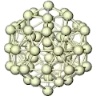

The NWChem software contains
computational chemistry tools that are scalable both in their
ability to efficiently treat large scientific problems,
and in their use of available computing resources
from high-performance parallel supercomputers to conventional
workstation clusters.
NWChem can handle:

- Biomolecules, nanostructures, and solid-state
- From quantum to classical, and all combinations
- Ground and excited-states
- Gaussian basis functions or plane-waves
- Scaling from one to thousands of processors
- Properties and relativistic effects
NWChem is actively developed by a consortium of developers and maintained by the EMSL located at the Pacific Northwest National Laboratory (PNNL) in Washington State. Researchers interested in contributing to NWChem should review the Developers page. The code is distributed as open-source under the terms of the Educational Community License version 2.0 (ECL 2.0).
The NWChem development strategy is focused on providing new and essential scientific capabilities to its users in the areas of kinetics and dynamics of chemical transformations, chemistry at interfaces and in the condensed phase, and enabling innovative and integrated research at EMSL. At the same time continued development is needed to enable NWChem to effectively utilize architectures of tens of petaflops and beyond.
NWChem version 7.0.2 can be downloaded from this link¶
EMSL Arrows¶
 Are you just
learning how to use NWChem and would like to have an easy way to generate input
decks, check your output decks against a large database of calculations,
perform simple thermochemistry calculations, calculate the NMR and IR
spectra of a modest size molecule, or just try out nwchem before
installing it? EMSL Arrows scientific service can help. A web api to
EMSL Arrows is now available for alpha testing.
Are you just
learning how to use NWChem and would like to have an easy way to generate input
decks, check your output decks against a large database of calculations,
perform simple thermochemistry calculations, calculate the NMR and IR
spectra of a modest size molecule, or just try out nwchem before
installing it? EMSL Arrows scientific service can help. A web api to
EMSL Arrows is now available for alpha testing.
for more information see EMSL Arrows - an easier way to use nwchem and EMSL Arrows
NWChem Documentation¶
NWChem Citation¶
Please cite the following reference when publishing results obtained with NWChem:
E. Aprà, E. J. Bylaska, W. A. de Jong, N. Govind, K. Kowalski, T. P. Straatsma, M. Valiev, H. J. J. van Dam, Y. Alexeev, J. Anchell, V. Anisimov, F. W. Aquino, R. Atta-Fynn, J. Autschbach, N. P. Bauman, J. C. Becca, D. E. Bernholdt, K. Bhaskaran-Nair, S. Bogatko, P. Borowski, J. Boschen, J. Brabec, A. Bruner, E. Cauët, Y. Chen, G. N. Chuev, C. J. Cramer, J. Daily, M. J. O. Deegan, T. H. Dunning Jr., M. Dupuis, K. G. Dyall, G. I. Fann, S. A. Fischer, A. Fonari, H. Früchtl, L. Gagliardi, J. Garza, N. Gawande, S. Ghosh, K. Glaesemann, A. W. Götz, J. Hammond, V. Helms, E. D. Hermes, K. Hirao, S. Hirata, M. Jacquelin, L. Jensen, B. G. Johnson, H. Jónsson, R. A. Kendall, M. Klemm, R. Kobayashi, V. Konkov, S. Krishnamoorthy, M. Krishnan, Z. Lin, R. D. Lins, R. J. Littlefield, A. J. Logsdail, K. Lopata, W. Ma, A. V. Marenich, J. Martin del Campo, D. Mejia-Rodriguez, J. E. Moore, J. M. Mullin, T. Nakajima, D. R. Nascimento, J. A. Nichols, P. J. Nichols, J. Nieplocha, A. Otero-de-la-Roza, B. Palmer, A. Panyala, T. Pirojsirikul, B. Peng, R. Peverati, J. Pittner, L. Pollack, R. M. Richard, P. Sadayappan, G. C. Schatz, W. A. Shelton, D. W. Silverstein, D. M. A. Smith, T. A. Soares, D. Song, M. Swart, H. L. Taylor, G. S. Thomas, V. Tipparaju, D. G. Truhlar, K. Tsemekhman, T. Van Voorhis, Á. Vázquez-Mayagoitia, P. Verma, O. Villa, A. Vishnu, K. D. Vogiatzis, D. Wang, J. H. Weare, M. J. Williamson, T. L. Windus, K. Woliński, A. T. Wong, Q. Wu, C. Yang, Q. Yu, M. Zacharias, Z. Zhang, Y. Zhao, and R. J. Harrison, “NWChem: Past, present, and future”, The Journal of Chemical Physics 152, 184102 (2020). DOI: 10.1063/5.0004997